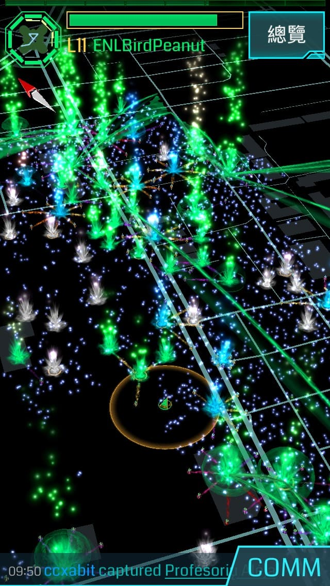

選擇對的陣營
當您選定了遊戲名稱(Codename)之後, 您必須選擇一個陣營. 綠軍(Enlightened)為了人類的進化而戰, 並相信進步與改革才是未來. 衷心邀請您加入我們這個大家庭.
綠軍活動紀實:
+ 2017/03/04 OP 大紫蛺蝶
+ 2016/10/30 OP ENL~台南花火祭Tainan fireworks
+ 2016/08/28 Operation 松山夏日花火祭
+ 2016/08/21 OPS：Giraffe's Dream
+ 2016/03/12 Operation Bear Island：System Pressure Test 小熊冒險島：系統壓力測試
還有超多, 等著您一起參與...
遊戲的基本操作
完成簡單的系統教學之後, 離開椅子, 出去走走吧! 帶著您的手機, 出去探索這個未知的世界.
新手教學:
+ 台灣綠軍新人手冊 (30秒上手懶人包)
+ 台灣綠軍新人手冊 (完整教學)
+ Telegram使用教學
完成右上角新人註冊後, 會有友軍就近協助您喔...

遊戲的真正意義
您可以選擇與人互動, 結交新朋友. 友軍也許就近在咫尺, 歡迎加入友善的綠軍社群, 我們在各地都有熱心的人願意提供協助.
相關連結:
+ Google社群: Enlightened Taiwan
+ 部落格: Enlightened Taiwan 資訊交流站
+ Google+ 粉絲專頁
期待您的加入...